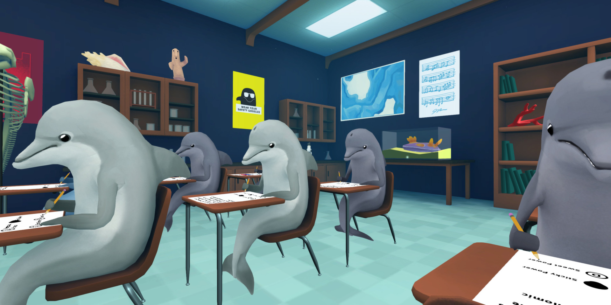
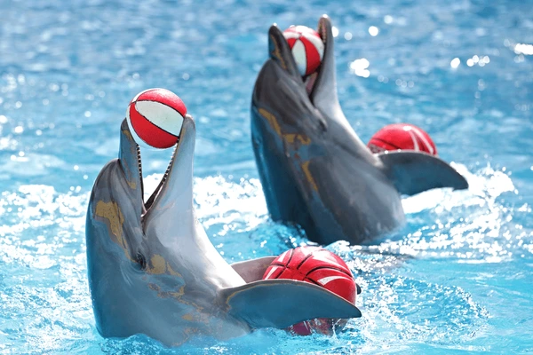
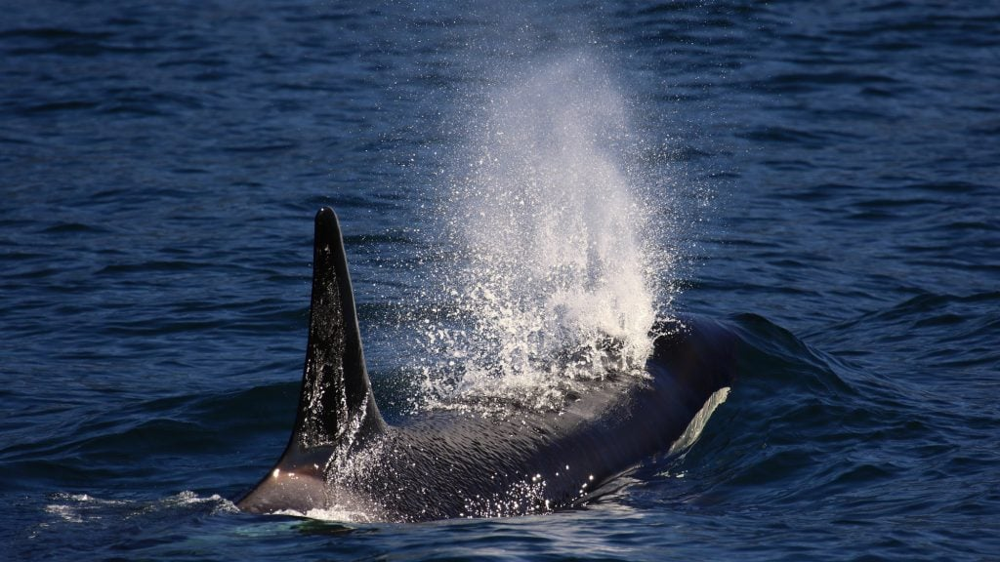

<!doctype html>

<html lang="en">
  <head>
   <!--Basic Presets--> 
    <meta charset="utf-8" />
    <meta name="viewport" content="width=device-width">

  <!--Linking to JS and CSS-->  
    <link rel="stylesheet" href="styles.css" />
    <script src="script.js"></script>
  <!--Website Title-->
    <title>For Learning Porpoises</title>
    
  <!--Google Font Import-->
    <link rel="preconnect" href="https://fonts.googleapis.com">
    <link rel="preconnect" href="https://fonts.gstatic.com" crossorigin>
    <link href="https://fonts.googleapis.com/css2?family=Lexend+Deca:wght@100..900&display=swap" rel="stylesheet">
    <link href="https://fonts.googleapis.com/css2?family=Parisienne&display=swap" rel="stylesheet">

  <!--Background Color-->
    <!--<style>
      body {
        background-color: #1e1e1e;
      }
    </style>-->
  </head>

</html>


<!--Real words and stuff-->

<!--Website Header-->
<div class="DSimage-container">
  </img>
</div>
<h1 class="websiteHeader">For Learning Porpoises<br>Information obtained from <a href="https://us.whales.org/whales-dolphins/facts-about-dolphins/" target="_blank">us.whales.org</a></h1>


<!--Other Info-->
<div id="grid">

  <div id="basicID">Dolphins are incredible. They are socially skilled, intelligent, agile, joyful, and playful creatures that share many emotional similarities with humans. There is an impressive range of different species of dolphin and they all have their own unique identities and characteristics!</div>

<div id="ballsID">
    
</div>

<div id="tenFactsID"><h3 class="tenFacts"><ul>Top ten facts about dolphins<br><br>
  There are currently 42 species of dolphins and seven species of porpoises.<br><br>
  Dolphins are marine mammals. They must surface to breathe air and give birth to live young.<br><br>
  A dolphin pregnancy last between nine and 16 months. The mother feeds her offspring on milk. The sons and daughters of resident orcas stay with their maternal family for life.<br><br>
  Dolphins eat fish, squid and crustaceans. They do not chew their food but may break it into smaller pieces before swallowing.<br><br>
  All dolphins have conical-shaped teeth. A Risso's dolphin has 14 while a spinner dolphin can have 240.<br><br>
  The orca (killer whale) is the largest dolphin. Hector's dolphin and Franciscana are two of the smallest.<br><br>
  The five river dolphin species inhabit the large waterways of Asia and South America.<br><br>
  Dolphins have an array of vocalisations such as clicks, whistles and squeals which they use for their well-developed communication and echolocation skills.<br><br>
  Lifespan varies from around 20 years in the smaller dolphin species to 80 years or more for larger dolphins such as orcas.<br><br>
  Maui's dolphin is the most endangered dolphin. There are less than 50 individuals remaining. Fewer than 10 vaquitas (a species of porpoise) survive.</ul></h3>
</div>

<div id="specHabFwat">
  <div id="speciesID"><h4 class="species">
    How many species of dolphins are there?<br>
    Currently there are 42 dolphin species which are grouped into five families: the oceanic dolphin family is by far the largest with 38 members; and there are four river dolphin families.. However, classification is not an exact science and as more information and discoveries come to light, deliberations will continue and some dolphin species are likely to be further split into more than one species and/or subspecies.
    <br>Names and nick names can certainly be confusing; there are eight dolphin names that feature the word ‘whale’, including pilot whales, killer whales, false killer whales and melon-headed whales. Two species have whale and dolphin in their name; the northern right whale dolphin and the southern right whale dolphin – no wonder both the public and scientists get confused!
  </h4></div>

  <div id="habitatID"><h4 class="habitat">
    Where do dolphins live?<br>
    Dolphins live in the world’s seas and oceans and in some rivers too. Some dolphin species prefer to live in coastal areas, others like shallow water but prefer to live away from the coast close to patches of shallower water which are located further out to sea.
    <br>Orcas are the only dolphins which live in the Arctic and Antarctic. Their large size means that they have more protection against the harsh cold of the freezing seas. Most dolphins prefer tropical and temperate waters as they are warm-blooded mammals and so it is easier for them to regulate their body temperature in these environments.
  </h4></div>

  <div id="fwaterID"><h4 class="fwater">
    Can dolphins live in fresh water?<br>
    River dolphins such as the Amazon River dolphin (boto) and Ganges river dolphins live their lives only in fresh water rivers and lakes, a long way from the ocean; they are sometimes known as the ‘true river dolphins’. There is another group of so-called river dolphins; these are fresh water populations of marine dolphin species some of whom permanently live in fresh water rivers, these include the tucuxi (or sotalia), the Guiana dolphin, Irrawaddy dolphin and the finless porpoise.
    </h4></div>
  </div>
</div>

<div id="porpoises">
  What are the differences between dolphins and porpoises?<br>
  Porpoises are smaller than dolphins; they are less than 2.5m (8ft) long. They are also characteristically chunkier than dolphins and have a small head, little or no beak, and a small triangular dorsal fin (except the finless porpoises!). Porpoises and dolphins also have a different teeth shape. Porpoise teeth are spade-shaped whilst dolphins are conical.
</div>

<div id="secondGrid">
  <div id="differences">
    How are dolphins different from fish?<br><br>
    Dolphins vary from fish in a number of ways. Both dolphins and fish have adapted to live their whole lives in the water, both have streamlined bodies and fins. But, dolphins are mammals and so they need regularly visit the surface to breathe air to survive, otherwise they would drown. Fish on the other hand extract oxygen from the water and do not need to surface.
    <br><br>

    Dolphins evolved from land mammals whose legs were underneath their bodies. As a result, dolphins tails move up and down as they swim, whereas a fish’s tail moves from side to side.
    <br><br>

    Dolphins are warm-blooded and have blubber to keep them warm. Fish are cold-blooded and are able to adjust to the different temperatures of the water without the need of body fat to keep them warm.
    <br><br>

    Most species of fish are also known to lay eggs and can lay hundreds of eggs in a single year. Dolphins give birth to a single baby once every 1 – 6 years and then feed their babies milk through their nipples.
  </div>

  <div id="orcas">
    Which is the biggest dolphin?<br><br>
    The biggest member of the dolphin family is the orca (killer whale). The larger males grow up to 9.8m (32ft 2in) and weigh up to 10,000kg (22,046lbs). Their black, towering dorsal fins grow up to 2m (6ft 7in) and are unique among all whales and dolphins. At birth, orcas are 2.1 to 2.6m (6ft 11in - 8ft 6in). <br><br>
  
    </img><br>
  
      <div id="speed">
        The fastest dolphin<br>
        Orcas are extremely fast swimmers and in short bursts can reach speeds in excess of 30mph (45kph). <br>
      </div>
    
  </div>
</div>

<div id="smolDolph">
  The smallest dolphins

  <div id="sizeGrid">

    <div id="newZ">
      New Zealand dolphin<br><br><div style="font-size: 200%; color: pink;">1.63</div><br>metres (female)
    </div>

    <div id="tucuxi">
      Tucuxi<br><br><div style="font-size: 200%; color:lightgoldenrodyellow">1.52</div><br>metres (female)
    </div>

    <div id="vaquita">
      Vaquita<br><br><div style="font-size: 200%; color: plum;">1.5</div><br>metres (female)
    </div>
  
  </div>

</div>

<div id="podExtinctGrid">
  <div id="pods">
    What is a group of dolphins called?<br><br>
    A group of dolphins is called a pod. Dolphins are social mammals that interact with one another, swim together, protect each other, and hunt for food as a team. Pod life plays a very important role in protecting dolphins from predators such as sharks. Most pods contain anywhere from 2 – 30 dolphins depending on the species and the situation, however there are occasions when pods gather with other pods to form superpods of 100 or even a few thousand dolphins!
    <br><br>
    Superpods usually only last for short periods of time, and may form during times of mating or when prey is particularly abundant in an area. Once they finish participating in the activity, the dolphins will return to their smaller pods with their family and/or friends until they meet up with other dolphins for the next gathering.
  </div>

  <div id="extinct">
    Have any dolphins gone extinct?<br><br>
    The baiji or Yangtze River dolphin, once found in the Yangtze River in China, is sadly now believed to be extinct. The baiji holds the unfortunate award for being the first whale or dolphin to be driven to extinction by humans; the baiji was sacrificed to population pressures and industrialisation of China.
    <br><br>
    Entanglement in fishing equipment and habitat destruction resulted in the serious decline of the baiji from the mid-1900s and the building of the Three Gorges Dam lead to further loss of habitat. Wild baiji sightings consisted only of individuals killed in fishing gear. In 2006 an international expedition searched for surviving baijis for six weeks. The boat survey covered the entire known range and devastatingly failed to record a single baiji; the scientists were forced to conclude that the baiji is probably extinct.
  </div>
</div>

<div id="endangered">

  <div id="endangText">
    Which is the world's most endangered dolphin?<br><br>
    The vaquita, which in Spanish means ‘little cow’, is the smallest porpoise in the world, and also the most endangered. The vaquita lives only in Mexican coastal waters, in a small area of the northern Gulf of California. The species is in terrible trouble and facing imminent extinction; there are only about 30 individuals left. Accidental capture and death in fishing nets is the cause of their rapid decline in numbers; to put it simply, more vaquitas are killed in fishing nets than are born each year.
      <br><br>
    Maui's dolphin is also on the brink of extinction. Maui’s dolphin is a sub-species of the New Zealand dolphin that lives only in coastal waters of part of North Island, New Zealand. Maui’s dolphins are facing extinction; there are now less than 50 individuals left living along a 22-mile stretch of coastline. The problem causing this rapid decline and indeed the decline of Hector’s dolphin (the other New Zealand dolphin sub-species) in South Island is entanglement in fishing nets.
  </div>

</div>

<div class="credGrid">
  <div id="Firefly">

      <div id="FireflyBG">

        <div id="FireflyMain">

        <div id="FFtext">
          Avid Firefly Main<br><br><br><br><br><br><br><br><br>
        </div>

        <div id="FFcred">
          By: KiraraShss[pixiv]
        </div>

      </div>

    </div>

  </div>
  
  <div id="credits">
    Hello, welcome to the credits.<br><br>

    Discord: .aegis_nova<br><br>

    <div id="yap">
    Anime and manga lover. I love anything fantasy with magic, most casual fantatisies at least. Slice-of-Life is also preety high up on my enjoyment list.<br><br>
    Here's my Anilist: <a href="https://anilist.co/user/AegisNova" target="_blank" id="anilist"> anilist.co/user/AegisNova </a> <br><br>
    
    I've played all of Hoyoverse's games to some degree. I've played Honkai Star Rail the most, followed by Zenless Zone Zero, then Genshin Impact, then I play Honkai Impact 3rd for a really short time a few years ago. Always open to chat, about anything mostly. So feel free to add me and shoot me a dm. <br><br>
    
    I LOVE FIRST robotics. I had the privilege of playing on team #6317 Disruptive Innovation as a Jack of All Trades(ex. CAD, Driver, Manufacturing, Programming, you name it). Fostered my love for anything with robots, electronics, and technology. So many good things came from this team, mostly trips. In the span of two years, I've gone to Illinois, Florida, Wisconsin, and Hawaii for competitions. Highly encourage any HackClub participants to check out FIRST Robotics.<br><br>
    
    Studying to eventaully become a Computer Engineering student at Iowa State University.<br>
    </div>
  </div>


  </div>
